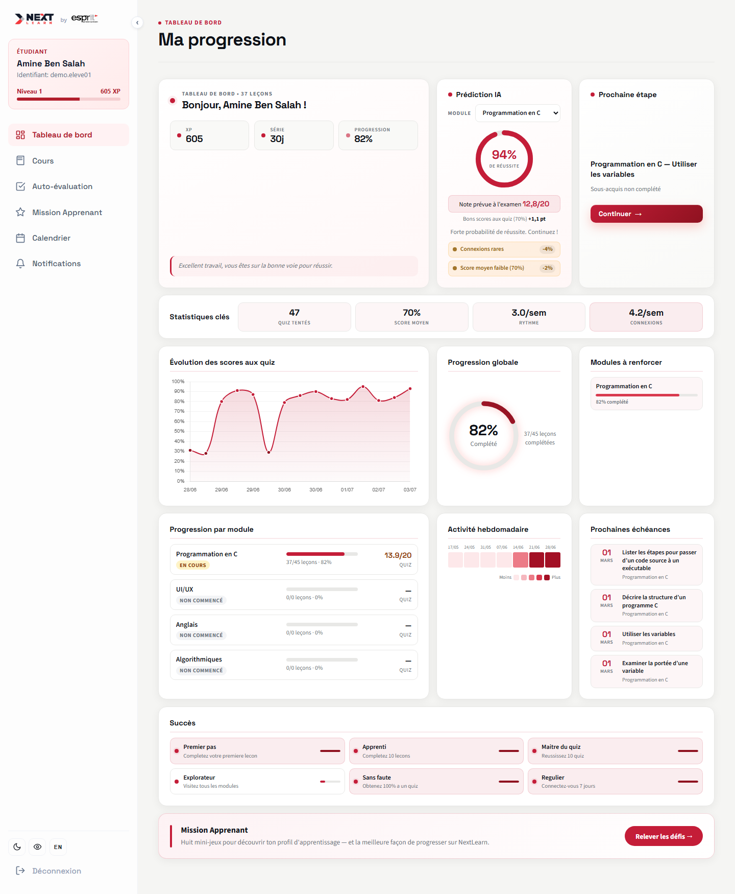
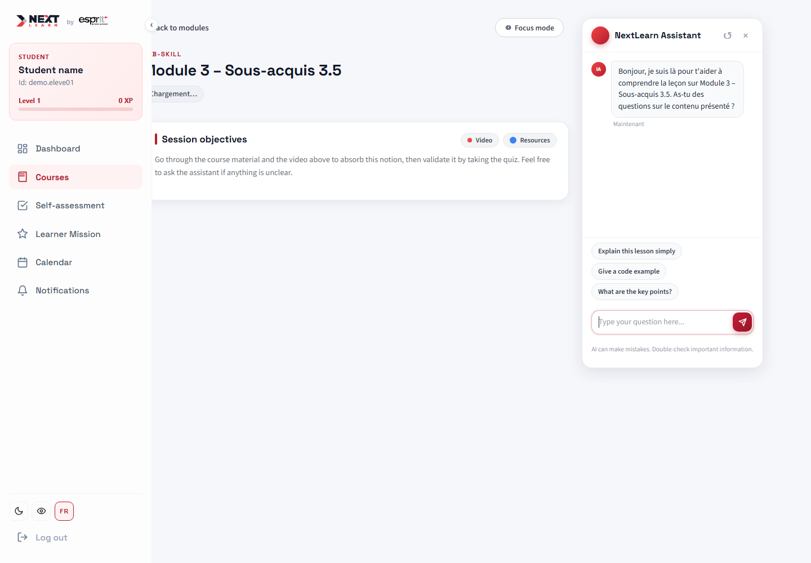
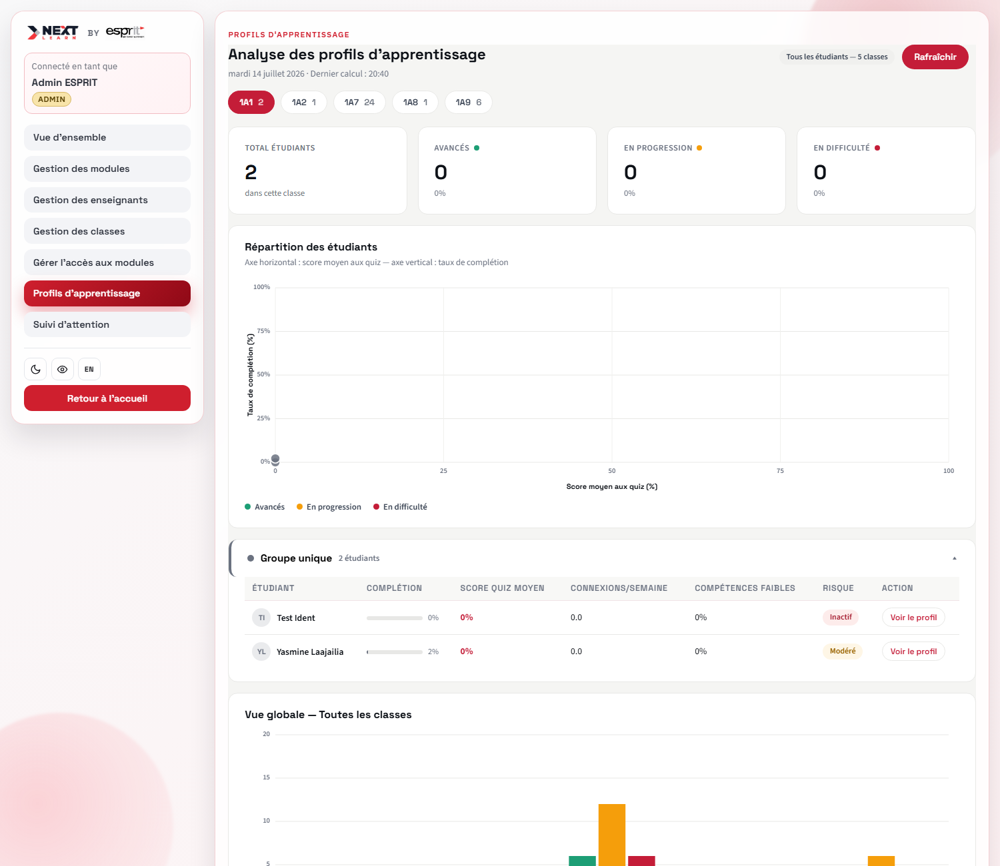
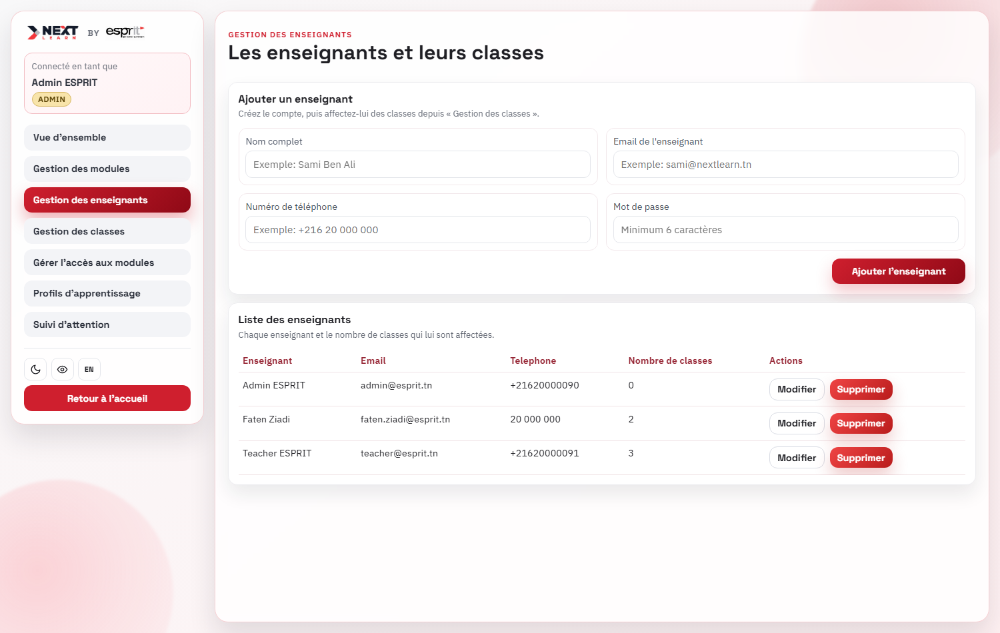

Online learning has opened education to millions — but reaching a screen is not the same as succeeding.
Dropout and low pass rates persist. Disengagement is silent and surfaces only once it is too late.
Beginner programming courses like C are the hardest first hurdle and need early, targeted support.
Failure is only observed at the exam — when there is no time left to react.
Teachers lack early, per-module insight into which students are falling behind.
One-size-fits-all content ignores each learner's style and engagement.
Question: can we predict, early and module by module, which students are at risk — and explain why in a way a teacher can trust?
| Capability | Generic LMS | NextLearn |
|---|---|---|
| Early, per-module risk prediction | ✗ | ✓ |
| Honest, explainable AI (exact SHAP) | ✗ | ✓ |
| Privacy-preserving engagement tracking | ✗ | ✓ |
| Learning-style personalization (VARK) | ✗ | ✓ |
| Course-grounded AI assistant | ✗ | ✓ |
Estimate catch-up risk and a predicted grade /20, per module — weeks before the exam.
Every prediction comes with exact SHAP attributions showing the factors behind it.
Learning-style (VARK) recommendations and a course-grounded RAG assistant tailor the experience.
Webcam frames never leave the browser — only derived attention metrics reach the server, after explicit consent.
Priorities framed as end-to-end, testable increments.
Short cycles delivering one feature, fully integrated.
Business goals mapped to data-science goals with metrics fixed before modeling.
Dashboards, per-student explanations and demo validated against the goals.
Per-module risk gauge and predicted grade /20.
Quiz trends and progress across sous-acquis.
SHAP factors explain what drives each prediction.
Upcoming deadlines from the unlock calendar.

Lesson content streamed per sous-acquis with objectives.
Grounded RAG chatbot answers only from the course material.
Resource switch adapts to the learner's VARK profile.
Focus mode and optional in-browser attention tracking.

K-means clustering groups students by behavior.
Profile breakdown per class and per cluster.
VARK signals feed personalized recommendations.
At-risk view surfaces students needing attention.

Classes & teachers managed in one place.
Module access and course start-date calendar.
AI quiz generation from the course content.
Attention & risk monitored class by class.

Trained on the Open University Learning Analytics Dataset — ~25 000 students with real pass/fail outcomes — combined with the platform's own quiz and progress signals.
Delay, average score, login frequency, gap depth, recency, weak-skill ratio, focus — computed at an early-warning day-90 cutoff, before the outcome.
Student-grouped cross-validation: no student appears in both train and test, so the metrics reflect real generalization.
| Model | Task | Why this model | Metric (test) |
|---|---|---|---|
| Random Forest — Classifier | Success / catch-up risk | Non-linear, robust on small tabular data; pairs with SHAP for explanations. | AUC ≈ 0.85 |
| Random Forest — Regressor | Predicted grade /20 | Same feature space; captures non-linear effects a linear model misses. | MAE 1.39/20 |
| SAKT — Deep Learning | Per-skill mastery (knowledge tracing) | Attention over the answer sequence — order & recency a static average can't model. | AUC 0.854 |
| K-Means — Unsupervised | Learner-profile segmentation | Simple, fast, interpretable for teachers; no labels needed. | qualitative |
| RAG — Embeddings + LLM | Course assistant | Answers grounded only on course content; anti-hallucination guard. | grounded |
The focus score needs three signals — eye openness, head pose, and gaze (requires iris landmarks). That requirement alone filters candidates; the four that qualify or come close were then benchmarked head-to-head on identical camera frames, same hardware (8-core, Chrome).
| Engine | Landmarks | Gaze | p50 | p95 | Frame budget (125ms) |
|---|---|---|---|---|---|
| MediaPipe FaceMesh — iris ON (ships) | 478 | ✓ | 16.2 ms | 18.8 ms | 15% |
| MediaPipe FaceMesh — iris OFF | 468 | ✗ | 7.0 ms | 9.4 ms | 7.5% |
| TF.js face-landmarks-detection (same weights, WebGL) | 478 | ✓ | 191.9 ms | 214.8 ms | 172% |
| BlazeFace (detection only) | 6 | ✗ | 41.7 ms | 51.7 ms | 41% |
Same landmark output (478 pts) as MediaPipe, but TF.js's WebGL runtime is 11.6× slower and misses the real-time budget by 72% — a runtime gap, not a capability gap. Landmark accuracy is not claimed: no annotated ground truth was available to measure it.
Continuous mastery replaces binary pass/fail — the graph adds prerequisite-aware ordering with no training required.
We report AUC, not accuracy — a 95.9% base rate makes accuracy misleading. Naming this pre-empts the obvious question.
Protected demographics are deliberately excluded; they added only +0.001 AUC — fairness at essentially no cost.
SAKT is validated on OULAD. On the C course, mastery uses a recency + graph fallback until enough real attempts train a course model.
Happy to answer your questions, thoughts and remarks — and to take NextLearn to the next level.